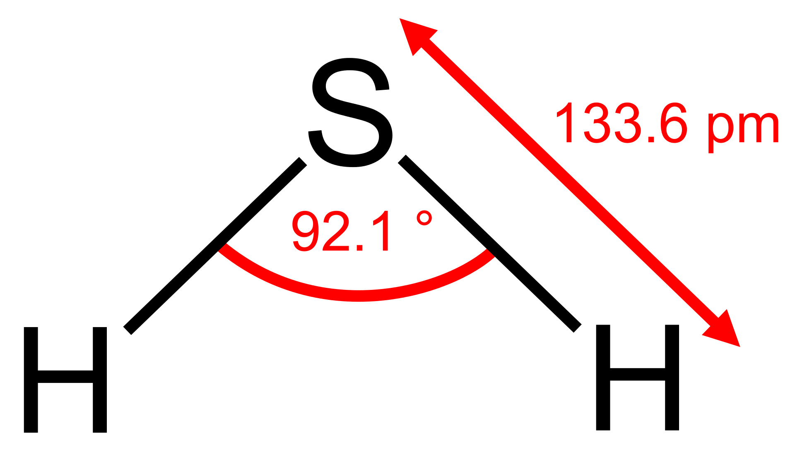
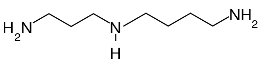

| Rank | Name | Formula | Natural occurence | Link - Structure |
| 1 | Putrescine | NH2(CH2)4NH2 | Odor of putrefying flesh - Bad breatd - bacterial vaginosis - Produced by the putrefaction of animal tissue | |
| 2 | Cadaverine | NH2(CH2)5NH2 | ||
| 3 | Hydrogen sulfide | H2S | Odor of rotten eggs. It is poisonous, corrosive, and flammable |  |
| 4 | Spermidine | NH2(CH2)2NH(CH2)4NH2 | Found in ribosomes and living tissues-originally isolated from semen |  |